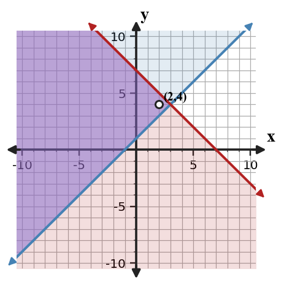
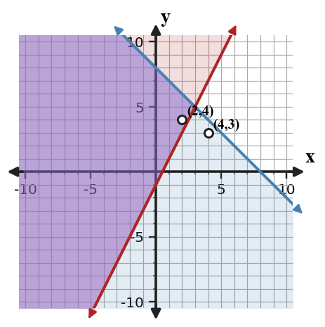

Linear Systems of Inequalities
Mathematical idea: A feasible solution to a system of inequalities must satisfy every inequality at the same time.
Today you will graph systems of inequalities, identify feasible points, and connect overlapping regions to real constraints. You will also compare graphing with point testing for efficiency.
Learning Target
Learning Target: Students will analyze and interpret systems of linear inequalities.
I can statements
- I can formulate a system of inequalities that represents multiple constraints.
- I can extend graphing strategies to represent overlapping solution regions.
- I can apply feasible-region reasoning to interpret possible solutions in context.
What's To Come
This is a long-range preview for future lessons. Do not solve it today. Instead, annotate it individually. Circle anything familiar, underline symbols or directions that seem important, and write notes about what information you think will be needed later.
As you annotate, ask yourself: What parts (words, symbols, graphs) do you KNOW? What parts look FAMILIAR? What parts look like jibberish?
A student council has \$200 for prizes. Small prizes cost \$8 and large prizes cost \$15. They want at least 18 total prizes. Let $s$ be small prizes and $l$ be large prizes.
- Write a system of inequalities for the constraints.
- Recommend either $(10,8)$ or $(14,5)$ as the better feasible order, or explain if neither works.
- Justify your recommendation using both total prizes and total cost.
Intro
Directions
Read the introduction aloud with a partner or in a small group. As you read, annotate the text by highlighting important ideas, circling key vocabulary, and writing short notes about connections, questions, or predictions in the margins.
Paragraph A. A system of inequalities has more than one constraint. A feasible point is an ordered pair that satisfies every inequality in the system. If it fails even one inequality, it is not feasible.
Paragraph B. Each inequality creates its own boundary and shaded half-plane. The solution to the system is the overlap of all the shaded regions. Points in the overlap meet every requirement at the same time.
Paragraph C. Sometimes you only need to know whether a few candidate points work. Instead of drawing the whole graph, you can substitute each point into every inequality. This is efficient when the question asks about specific choices rather than the whole region.
Paragraph D. Useful representations include systems of inequalities, multiple boundary lines, overlapping shaded regions, feasible points, and context statements. A strong graph shows each boundary and clearly marks the shared region.
Paragraph E. Real constraints often include budgets, minimum amounts, maximum limits, or combinations of resources. The feasible region represents all choices that satisfy the restrictions, so it can support decision-making.
Stop and Discuss
- What does a feasible point mean in a system of inequalities?
- Why does the overlap matter when graphing a system of inequalities?
- Why might testing points be faster than graphing in some situations?
A point is feasible only if it satisfies every inequality in the system.
$$\begin{aligned}y&\ge x+1\\y&\le -x+7\end{aligned}$$| Point | $y\ge x+1$ | $y\le -x+7$ | Feasible? |
|---|---|---|---|
| $(2,4)$ | $4\ge3$ true | $4\le5$ true | yes |
| $(5,2)$ | $2\ge6$ false | $2\le2$ true | no |

The overlap contains points that make both inequalities true.
Example 1: Meaning of feasible point
A snack stand can sell combinations of granola bars $g$ and fruit cups $f$ under two constraints: $g+f\le 40$ and $f\ge 10$.
- In your own words, what does a feasible point mean here?
- Decide whether $(25,12)$ is feasible by testing both inequalities.
- Explain why passing only one inequality is not enough.
You Try It 1: Feasible point in a new context
A student has time for practice problems $p$ and review videos $v$. The constraints are $p+v\le 30$ and $p\ge 12$.
- Explain what a feasible point means in this context.
- Decide whether $(14,10)$ is feasible.
- Give one point that fails one constraint and explain why.
Stop and Discuss
- Why did each point have to satisfy both inequalities to be feasible?
Graph each inequality, then keep only the region shared by all inequalities.
$$\begin{aligned}y&\lt 2x+3\\y&\ge -x-1\end{aligned}$$| Inequality | Boundary | Shading |
|---|---|---|
| $y\lt 2x+3$ | dashed | below |
| $y\ge -x-1$ | solid | above |

The darker overlap is the solution region for the system.
Example 2: Graph a system of inequalities
Graph the system of inequalities and identify one feasible point.

- Graph each boundary with the correct line style.
- Shade each inequality and identify the overlap.
- Name one point in the feasible region and verify it algebraically.
You Try It 2: Graph another system
Graph the system of inequalities and identify one feasible point.
- Graph each boundary with the correct line style.
- Shade each inequality and identify the overlap.
- Verify one feasible point using substitution.
Stop and Discuss
- How did the overlap help you find more than one possible solution?
Example 3: Describe the overlap
Graph the system and describe the overlap region.
- Decide the boundary type and shaded side for each inequality.
- Graph the two inequalities on the same axes.
- Describe the feasible region using words and one example point.
You Try It 3: Overlap with a horizontal boundary
Graph the system and describe the feasible region.
- Identify the boundary type for each inequality.
- Graph and shade the overlap.
- Name one feasible point and one non-feasible point.
Stop and Discuss
- What information does a graph of the whole feasible region show that a single test point does not?
For a few candidate points, substitution can be quicker than drawing the whole graph.
$$\begin{aligned}y&\le -x+8\\y&\ge 2x-1\end{aligned}$$| Point | First inequality | Second inequality | Conclusion |
|---|---|---|---|
| $(2,4)$ | $4\le6$ true | $4\ge3$ true | feasible |
| $(4,3)$ | $3\le4$ true | $3\ge7$ false | not feasible |

Testing works because a feasible point must pass every inequality, not just one.
Example 4: Compare graphing and testing
A system is shown below.
$$\begin{aligned}y&\le 10-x\\y&\ge 2x-2\end{aligned}$$- Test $(3,5)$ and $(5,4)$ in both inequalities.
- Explain how graphing would show the same information.
- If you only need to check these two points, which method is more efficient? Justify your choice.
You Try It 4: Test candidates efficiently
A system is shown below.
$$\begin{aligned}y&\ge -x+4\\y&\le 2x+1\end{aligned}$$- Test $(1,3)$ and $(4,5)$ in both inequalities.
- Decide which points are feasible.
- Explain when graphing the entire system would be more helpful than testing only candidates.
Stop and Discuss
- When is point testing the more efficient method, and when is graphing better?
Summary
A system of inequalities represents multiple constraints that must all be true at once.
The solution set is the overlapping shaded region, and a feasible point is any point inside that overlap that satisfies every inequality.
A common error is treating a point as feasible after checking only one inequality.
Strong understanding means you can graph the overlap, test candidate points, and interpret feasible choices in context.
Common Mistakes
- Checking only one inequality. Why it is tempting: one true statement feels convincing. What to check instead: test every inequality in the system.
- Shading the union instead of overlap. Why it is tempting: both shaded regions are visible. What to check instead: keep only the shared region.
- Ignoring dashed boundaries. Why it is tempting: the shaded side may look correct. What to check instead: exclude points on dashed boundary lines.
- Forgetting context limits. Why it is tempting: graphs extend in all directions. What to check instead: consider nonnegative or practical restrictions when given.
- Using graphing for tiny candidate checks. Why it is tempting: graphing feels more complete. What to check instead: substitute when only a few points need checking.
Optional Future Task Reflection
Look back at the future task. Do not solve it yet. Highlight one part that makes more sense now than it did at the beginning. Circle one part that still feels unfamiliar. Write one sentence about what representation you would look at first.
What does “feasible point” mean in a system of inequalities?
Graph the system of inequalities and identify one feasible point.
What is one idea about systems of linear inequalities you understand better now than at the start of class? Write at least one complete sentence.
What is one thing about systems of linear inequalities you still want to understand or practice? Be specific — name the idea, not just "everything."